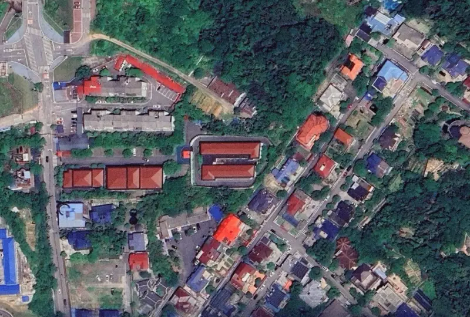

Free Tara Yadi
关注 Tara Zhang 张雅笛
失去自由——不该成为发声的代价
置顶文章
加载中...

数据更新时间：2025 年 10 月 25 日
返国后与外界失联，
基本法律权益不被保障，
至今已多日杳无音讯
2025 年 7 月 31 日，张雅笛（又名 Tara）在云南省突然失踪。她曾旅居法国求学，热心参与人权倡议与社群志愿服务，始终以温和却坚定的方式表达对自由与尊严的信念。 据称，她被国家安全人员带走，随后音讯全无。她的家人与朋友不断尝试寻找，却始终无法得知她被拘押的详情或健康状况。 如今，她的失踪已成为众多人心中的悬念与牵挂。
失踪與拘押
Tara 在海外就读并参与人权倡议后失踪，据报导被国安人员带走，至今已被羁押多天
天
法律阻碍
当事人与律师、家人完全隔绝，法律支援受阻
0
次
律师会见
学业与生活被迫中断
原计划于 2025 年秋季赴英国伦敦大学亚非学院（SOAS）攻读人类学硕士，如今学业与生活陷入停滞。对她而言，失去自由不仅是法律上的拘押，也意味着梦想与未来被暂停。
22
岁
国际呼吁
国际社会持续关注此案，并呼吁中国当局保障她的基本人权与会见权。
50+
国际媒体已报导事件
案情现状
这里是目前关押Tara的机构——湖南省国安厅看守所，家属委托的律师未能会见到张雅笛本人，当局以涉及国家秘密为由拒绝了律师的会见申请。在这座高墙背后，她失去了自由， 与外界隔绝。
我们希望让她的故事不被遗忘， 让沉默不再是唯一的回音。